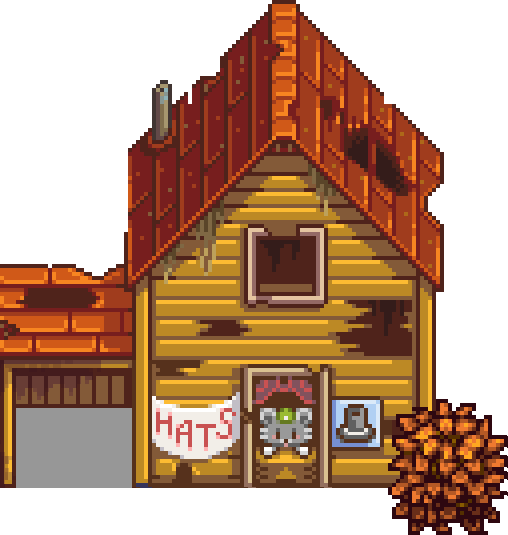

Stardew Valley is an open-ended country-life RPG! You’ve inherited your grandfather’s old farm plot in Stardew Valley. Armed with hand-me-down tools and a few coins, you set out to begin your new life. Can you learn to live off the land and turn these overgrown fields into a thriving home? It won’t be easy. Ever since Joja Corporation came to town, the old ways of life have all but disappeared. The community center, once the town’s most vibrant hub of activity, now lies in shambles. But the valley seems full of opportunity. With a little dedication, you might just be the one to restore Stardew Valley to greatness!
If a gate is open and you stand on its cell, close it, and try to open it again while still occupying its cell, the gate will break off.
Despite being only one block wide, it is still possible to ride a horse through any orientation of gate in any direction.
Breaking the gate with a pickaxe does not destroy it, so you can break it and immediately replace it the day before it degrades.
A gate can replace a placed fence piece (by selecting the gate in inventory and clicking on the fence piece). You can make hardwood and stone gates this way. If surrounded by other fence pieces, the gate may take on the color of the fence instead of the normal dark brown color. This effect is lasting and is a way to match your gate to the surrounding fence.